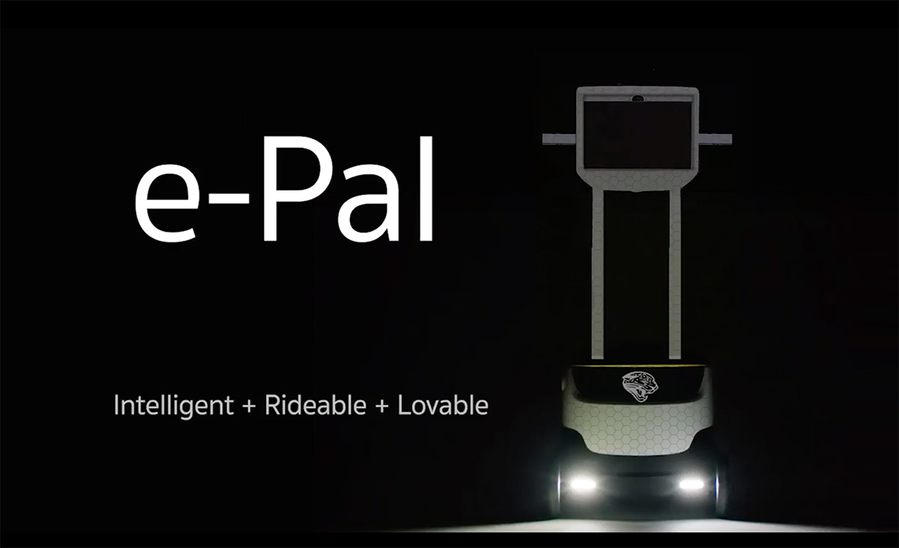

Shared Autonomous Micromobility
Micromobility vehicle sizes range from electric skateboards to hundreds of kilograms.* The vehicles displayed here are not yet equipped for autonomous driving, but we can dream of the day when vehicles move automatically between riders, and hide themselves away when not in use.Micromobility favors creating pathways separate from busy traffic, so families can ride safely with children. Quiet electric motors are well suited for use in wilderness and park areas. Micromobility vehicles on pathways could be required to use sensors to automatically reduce speeds around pedestrians.
Schaeffler Bio‑Hybrid

Schaeffler Bio‑Hybrid - Video
In 2019 Schaeffler entered an investment agreement with China’s Hunan province to jointly develop a mobility ecosystem for intelligent vehicles.
Pedilio
Includes solar roof panel.In the Pedilio, the driver's eye position is the same heigth as drivers of cars. Gallery - Video
Shared Micromobility MotorsModular, Personal, Fast and Environmentally Friendly Micromobility embraces a spirit of self-determination and exploration. When combined with an intelligent vehicle guidance system, shared velomobiles are ideal vehicles for independent seniors and intown commuters. Segway S-Pod * Horace Dediu recommends defining micromobility as utility focused urban transport in sub 500kg vehicles. Check out his PodCast with Oliver Bruce. Self-Driving Scooters |
Personal Rapid Transit 2.0 The Clever Car, developed by the University of Berlin with funding from the European Union.  ePal Intelligent Delivery A modular motor could serve as the base for the ePal, a Segway with a screen for local deliveries. |